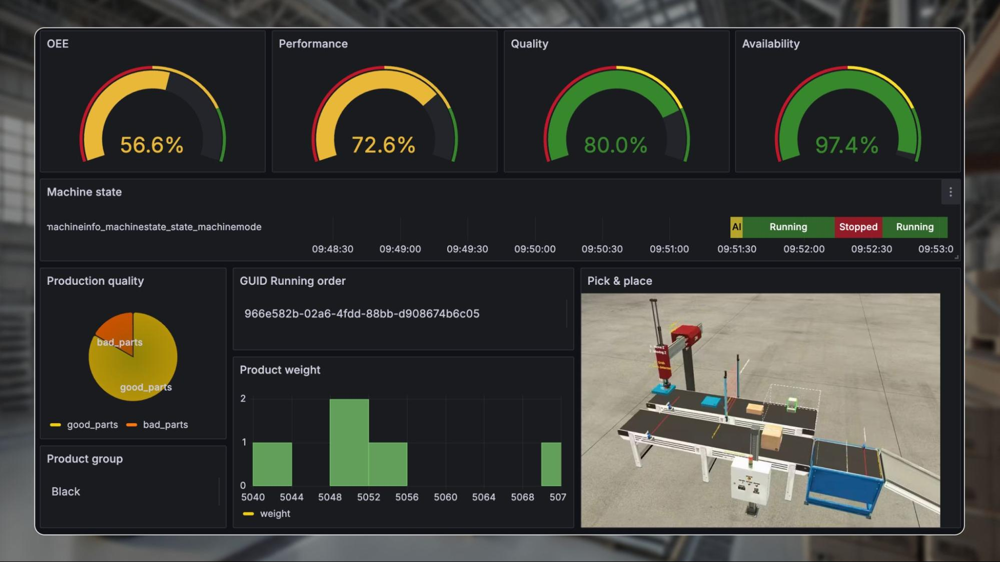

How We Cut MTTR by 60%
Two years ago, our mean time to resolution (MTTR) for production incidents was 47 minutes. Today it's 19 minutes. The difference wasn't better tooling or faster engineers — it was a structured incident response process that eliminates confusion, assigns clear roles, and prioritizes mitigation over root cause analysis.

This is our complete incident response playbook: severity levels, escalation policies, war room procedures, postmortem templates, and the tracking system that ensures action items actually get done.
The 5 Phases of Incident Response
Severity Levels
Clear severity definitions eliminate the "is this a SEV1 or SEV2?" debate during an incident. We define severity by customer impact, not by technical complexity:
| Severity | Definition | Response Time | Escalation | Example |
|---|---|---|---|---|
| SEV1 | Complete service outage or data breach affecting all users | 5 minutes | VP Engineering + CTO notified | Production database down, payment processing failed |
| SEV2 | Major feature degraded, affecting >10% of users | 15 minutes | Engineering Manager notified | Search broken, checkout slow (>10s), login failures for subset |
| SEV3 | Minor feature degraded, workaround available | 1 hour | Team lead notified | Email notifications delayed, non-critical API errors |
| SEV4 | Cosmetic issue or minor bug, no user impact | Next business day | None — handled in sprint | Dashboard rendering glitch, log formatting error |
If you're debating between SEV2 and SEV1, call it SEV1. It's far better to over-escalate and stand down than to under-escalate and lose time. We've never had anyone criticized for escalating too aggressively. We have had incidents where under-escalation cost us 30+ minutes.
PagerDuty Escalation Policy
Our PagerDuty escalation policy ensures the right people are engaged at the right time:
# PagerDuty Escalation Policy (Terraform)
resource "pagerduty_escalation_policy" "production" {
name = "Production Incidents"
num_loops = 3
rule {
escalation_delay_in_minutes = 5
target {
type = "schedule_reference"
id = pagerduty_schedule.primary_oncall.id
}
}
rule {
escalation_delay_in_minutes = 10
target {
type = "schedule_reference"
id = pagerduty_schedule.secondary_oncall.id
}
target {
type = "user_reference"
id = pagerduty_user.engineering_manager.id
}
}
rule {
escalation_delay_in_minutes = 15
target {
type = "user_reference"
id = pagerduty_user.vp_engineering.id
}
}
}Escalation timeline: On-call engineer has 5 minutes to acknowledge. If no ack, secondary on-call + engineering manager paged at 10 minutes. If still no ack, VP Engineering paged at 15 minutes. After 3 loops (45 minutes), the incident auto-escalates to the executive on-call.
The War Room
For SEV1 and SEV2 incidents, we immediately open a war room (Slack channel + Zoom bridge). Clear roles prevent the chaos of 15 people all trying to fix the same thing.
War Room Roles
| Role | Responsibility | Who |
|---|---|---|
| Incident Commander (IC) | Coordinates response, makes decisions, delegates tasks. Does NOT debug. | On-call engineer or senior engineer |
| Communications Lead | Updates stakeholders, status page, customer support. Shields IC from interruptions. | Engineering manager or designated comms person |
| Scribe | Documents timeline, actions taken, decisions made. This becomes the postmortem timeline. | Any available engineer |
| Subject Matter Experts | Debug and fix. Called in by IC as needed based on the affected system. | Database, networking, application owners |
Communication Cadence
- SEV1: Status update every 15 minutes to stakeholders, every 30 minutes to customers (via status page)
- SEV2: Status update every 30 minutes to stakeholders
- Internal Slack channel: Real-time updates from IC and SMEs
- Status page: Updated within 5 minutes of SEV1 declaration
This is the single most important rule. The Incident Commander coordinates — they assign tasks, make decisions, and maintain situational awareness. The moment the IC starts debugging, coordination breaks down and the incident drags on. If the IC is the only person who can debug the issue, hand off IC duties to someone else.
Mitigation-First Philosophy
The #1 reason our MTTR dropped from 47 to 19 minutes: we stopped trying to find root cause during the incident. Instead, we focus exclusively on mitigation — restoring service first, investigating later.
Mitigation Playbook
- Can we rollback? If the incident started after a deploy, rollback immediately. Don't investigate whether the deploy caused it — just rollback. (This resolves ~40% of our incidents in under 5 minutes.)
- Can we scale? If it's a capacity issue, scale up/out first, investigate the traffic pattern later.
- Can we failover? If a component is unhealthy, failover to the secondary. Database replica promotion, region failover, etc.
- Can we shed load? If nothing else works, enable maintenance mode or feature flags to disable non-critical features and reduce load on the critical path.
# Quick rollback script (used during incidents)
#!/bin/bash
# rollback.sh — reverts to the previous deployment
NAMESPACE=${1:-production}
DEPLOYMENT=${2:-api-server}
# Get previous revision
PREV_REVISION=$(kubectl rollout history deployment/$DEPLOYMENT \
-n $NAMESPACE -o json | jq '.metadata.generation - 1')
echo "Rolling back $DEPLOYMENT in $NAMESPACE to revision $PREV_REVISION"
kubectl rollout undo deployment/$DEPLOYMENT -n $NAMESPACE
# Wait for rollout to complete
kubectl rollout status deployment/$DEPLOYMENT -n $NAMESPACE --timeout=120s
echo "Rollback complete. Verify service health."Postmortem Template
Every SEV1 and SEV2 incident gets a postmortem within 48 hours. Here's our template:
Postmortem Document Structure
## Incident Title: [Brief description]
## Date: [YYYY-MM-DD]
## Severity: [SEV1/SEV2]
## Duration: [Start time — End time (total minutes)]
## Incident Commander: [Name]
## Author: [Name]
### Summary
[2-3 sentences: what happened, who was affected, how long]
### Impact
- Users affected: [number or percentage]
- Revenue impact: [estimated $]
- SLA impact: [which SLAs were breached]
- Support tickets generated: [count]
### Timeline
| Time (UTC) | Event |
|------------|-------|
| 14:00 | Monitoring alert fires: API latency > 5s |
| 14:03 | On-call engineer acknowledges PagerDuty |
| 14:05 | War room opened, IC assigned |
| 14:08 | Root cause identified: database connection pool exhausted |
| 14:10 | Mitigation: increased connection pool limit |
| 14:15 | Service restored, monitoring confirms recovery |
### Root Cause
[Detailed technical explanation]
### Contributing Factors
- [Factor 1: e.g., no connection pool monitoring]
- [Factor 2: e.g., recent traffic increase not accounted for]
- [Factor 3: e.g., connection pool default was too low]
### What Went Well
- [e.g., Alert fired within 2 minutes of impact]
- [e.g., Rollback was fast and clean]
### What Went Poorly
- [e.g., Took 8 minutes to identify root cause]
- [e.g., No runbook for connection pool issues]
### Action Items
| Action | Owner | Priority | Deadline | Ticket |
|--------|-------|----------|----------|--------|
| Add connection pool monitoring | @alice | P1 | 2024-02-15 | JIRA-1234 |
| Create runbook for DB connection issues | @bob | P2 | 2024-02-20 | JIRA-1235 |
| Load test with 2x current traffic | @carol | P2 | 2024-02-28 | JIRA-1236 |Blameless Culture in Practice
Blameless doesn't mean accountability-free. It means we focus on systems and processes, not individuals. Here's what that looks like in practice:
- "Who pushed the bad deploy?" → blame-oriented, shuts down honesty
- "Why didn't the on-call catch this sooner?" → blame-oriented
- "This wouldn't have happened if [person] had tested properly" → blame-oriented
- ✅ "What about our deploy process allowed this change to reach production?" → system-oriented
- ✅ "What signals were missing that would have enabled faster detection?" → system-oriented
- ✅ "How can we make the right thing easier to do?" → system-oriented
The 5 Whys: A Real Example
Here's a real 5 Whys analysis from a production database outage:
Why did the service go down?
The database ran out of connections. All 100 connections in the pool were exhausted, and new requests were queuing until they timed out.
Why did the database run out of connections?
A new feature was deployed that opened a database connection per API request but didn't release it properly — connections were leaking.
Why wasn't the connection leak caught in testing?
Our load tests run for 5 minutes with 100 concurrent users. The leak only manifests after ~20 minutes of sustained traffic because connections are released on garbage collection, which is non-deterministic.
Why don't we have monitoring on connection pool usage?
We monitor database CPU, memory, and query latency, but connection pool utilization was never added to our monitoring stack. It was a blind spot.
Why was it a blind spot?
Our monitoring checklist for new services doesn't include connection pool metrics. The checklist was created 2 years ago and hasn't been updated as our architecture evolved.
1. Fix the connection leak (immediate). 2. Add connection pool monitoring to all services (1 week). 3. Extend load tests to 30 minutes minimum (2 weeks). 4. Update the monitoring checklist and review quarterly (ongoing). — Notice: no action item is "tell the developer to be more careful." That's not a systemic fix.
Action Item Tracking: Making Postmortems Stick
The biggest failure mode of postmortems isn't writing them — it's the action items that never get done. We solved this with a strict tracking process:
- Every action item gets a Jira ticket — created during the postmortem meeting, not after
- Every ticket has an owner and a deadline — no "team" ownership, one person is accountable
- P1 action items go into the current sprint — they're not backlog items that get deprioritized
- Weekly review in team standup — "any open postmortem action items?" is a standing agenda item
- Monthly report to engineering leadership — action item closure rate is a team metric
Tracking Metrics
| Metric | Target | Current |
|---|---|---|
| Postmortem completion rate (within 48hrs) | 100% | 94% |
| Action item closure rate (within 30 days) | 90% | 87% |
| Repeat incidents (same root cause) | <5% | 3.2% |
| MTTR (SEV1) | <30 min | 19 min |
| MTTD (Mean Time to Detect) | <5 min | 3.4 min |
The 6% gap in postmortem completion is almost always SEV2 incidents that get deprioritized because "it wasn't that bad." We're addressing this by making postmortem completion a blocker for the next sprint planning — if your team has an open postmortem, it's the first thing discussed.
Incident Response Automation
We automate the repetitive parts of incident response so humans can focus on diagnosis and decision-making:
# Slack bot auto-creates incident channel and populates it
# Triggered by PagerDuty webhook
def handle_incident(event):
severity = event['severity']
service = event['service']
# Create incident channel
channel = slack.create_channel(f"inc-{date}-{service}")
# Post incident template
slack.post_message(channel, f"""
🚨 **{severity} Incident — {service}**
**Incident Commander:** {get_oncall(service)}
**Status:** Investigating
**Impact:** TBD
**Quick Links:**
• <{grafana_url}|Grafana Dashboard>
• <{runbook_url}|Runbook: {service}>
• <{deploy_history_url}|Recent Deploys>
**Checklist:**
☐ Assess customer impact
☐ Update status page (if SEV1/SEV2)
☐ Identify mitigation (rollback? scale? failover?)
☐ Assign scribe
""")
# Auto-invite relevant people
slack.invite_users(channel, get_team_members(service))Key Takeaways
- Mitigate first, investigate later — this single principle cut our MTTR by 60%
- The IC does not debug — coordination and debugging are incompatible tasks
- Define severity by customer impact, not technical complexity
- When in doubt, escalate up — over-escalation is always better than under-escalation
- Blameless means system-focused, not accountability-free
- Action items need owners, deadlines, and Jira tickets — created during the postmortem, not after
- Track postmortem metrics — completion rate, action item closure rate, and repeat incident rate
- Automate the boring parts — channel creation, stakeholder notification, runbook links
- Rollback is your best friend — 40% of our incidents resolve in under 5 minutes with a rollback